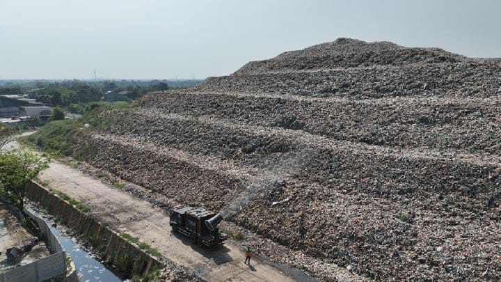
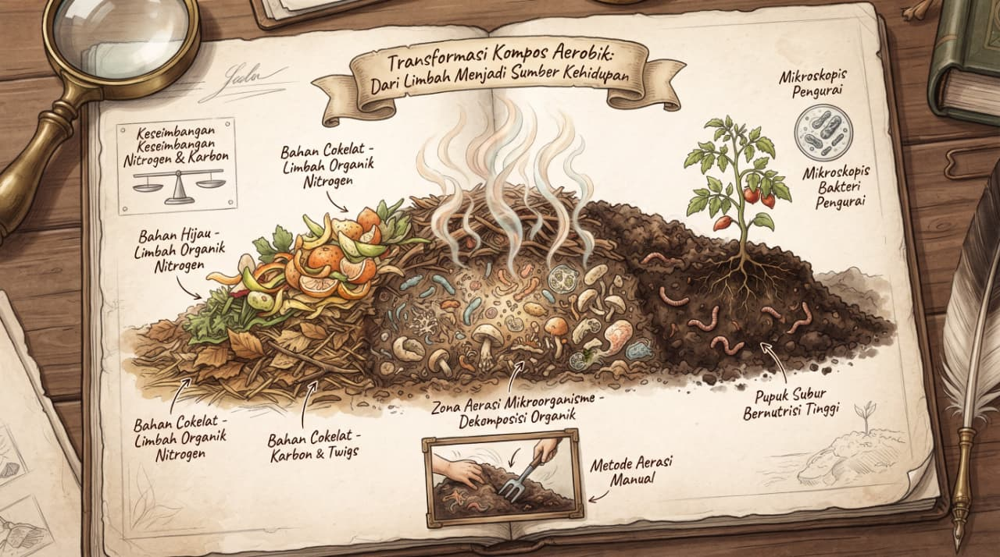
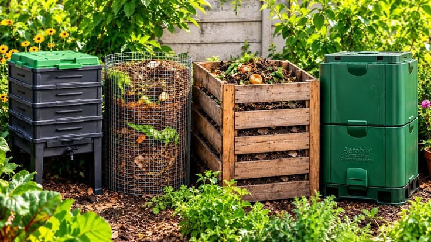

Sains & Praktik Pengelolaan Kompos Berkelanjutan
Portal edukasi interaktif berbasis ensiklopedia untuk memahami proses dekomposisi organik, mengatasi permasalahan limbah rumah tangga, dan mewujudkan lingkungan hijau.
Ringkasan Portal
BioCompost menyajikan data ekologis, analisis penumpukan sampah organik, serta solusi pengomposan mandiri yang bersumber langsung dari referensi terpercaya.

Permasalahan Sampah
Limbah makanan dan sampah dapur yang dibuang tanpa pengolahan dapat menghasilkan gas metana di TPA serta mencemari lingkungan.

Solusi Pengomposan
Mengubah sampah hijau (nitrogen) dan sampah cokelat (karbon) melalui proses aerasi mikroorganisme menjadi pupuk organik bernutrisi tinggi.

Kalkulator Otomatis
Fitur interaktif untuk menghitung takaran bahan masukan kompos secara akurat serta memprediksi hasil akhir pupuk yang matang.
Tentang Proyek Ini

Definisi Kompos
Kompos adalah pupuk organik hasil pelapukan bahan-bahan organik yang diuraikan oleh mikroorganisme seperti bakteri dan jamur dalam kondisi lingkungan terkontrol.

Tujuan & Manfaat
Proyek web interaktif ini dikembangkan sebagai media pembelajaran berbasis proyek (PBL) untuk mengedukasi masyarakat mengenai pentingnya daur ulang sampah organik secara mandiri.
Artikel & Galeri Kegiatan
Kumpulan materi ensiklopedia mengenai kompos serta dokumentasi visual proses pengolahannya.

Proses Biokimia Penguraian
Proses pembuatan kompos melibatkan interaksi aktif antara material organik dan mikroorganisme pengurai. Melalui kondisi aerobik maupun anaerobik, material tersebut bertransformasi menjadi humus yang menyuburkan tanah.
Keseimbangan Unsur Hara
Keberhasilan pengomposan sangat bergantung pada rasio perbandingan unsur Nitrogen dari bahan hijau (seperti sisa sayuran) dan unsur Karbon dari bahan cokelat (seperti daun kering).

Sisa Sayuran Dapur
Kategori: Bahan Baku Hijau

Dedaunan Kering Taman
Kategori: Bahan Baku Cokelat

Wadah Komposter Box
Kategori: Proses & Alat

Kompos Siap Panen
Kategori: Hasil Akhir